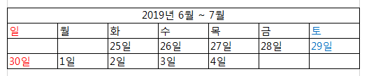
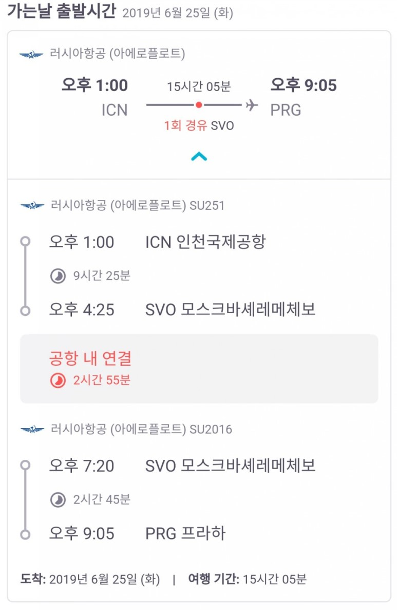
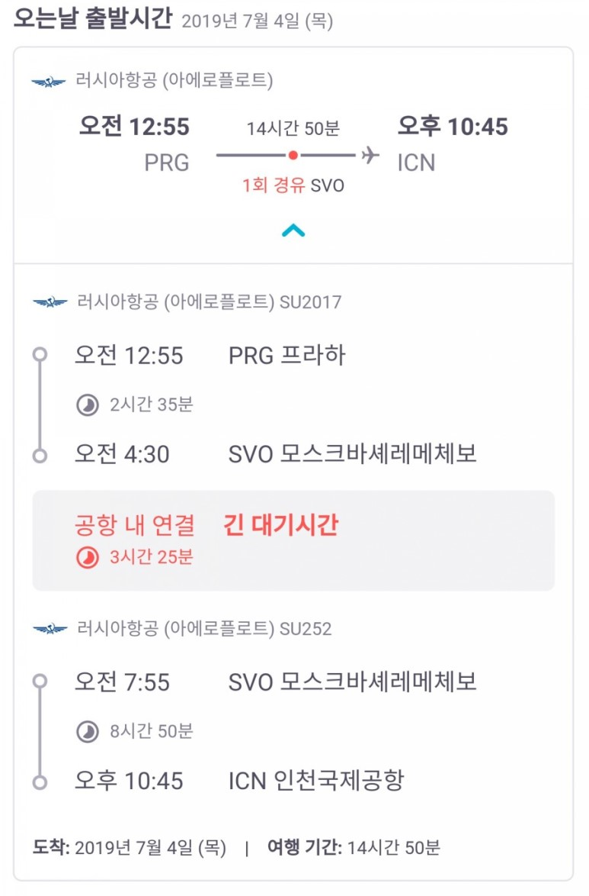

2019.06.25(화)~2019.07.04(목)

예상 비행기 일정


단락나누기와 줄 바꾸기가 있다. 단락나누기는 p를 사용하고 줄 바꾸기는 br를 사용한다. 줄 바꾸기보다 단락나누기가 더 많이 사용한다. 단락과 단락을 구분하는 것이 웹페이지를 정보로서 보다 가치있게 해준당!
신기하다!! 단락나누기에서 얼만큼 단락을 나눌 수 있는지도 조정 가능하다!!
- 2017
- 2018
- 2019
- ol은 ordered list
- ul은 unordered list
- li은 list
- 위에는 ol쓰고 이거는 ul썼다
한남대학교 사진을 의미없이 추가해보자.